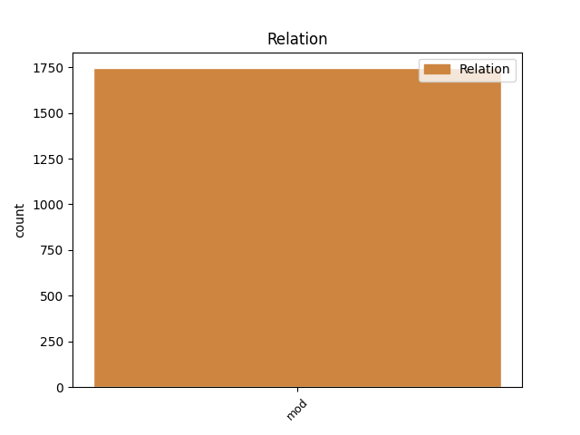
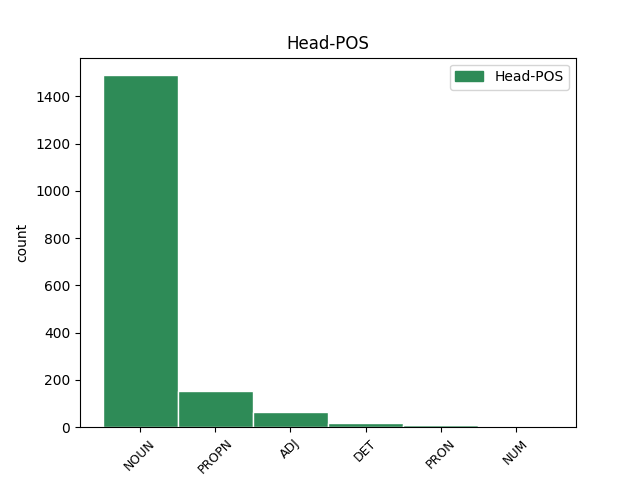
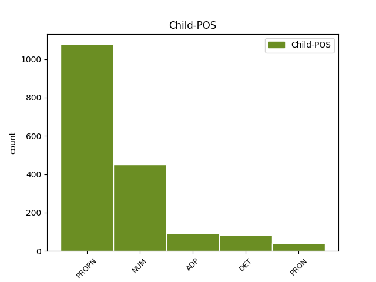

Distribution of features within this leaf



Agreement Rules sorted by frequency.
- When the dependent token is the modifer(mod) of the head token, and the dependent token is PROPN.
1 DUBLIN _ _ _ _ 0 _ _ _
2 Irsko _ _ _ _ 0 _ _ _
3 predsedstvo _ _ _ _ 0 _ _ _
4 Evropske _ _ _ _ 0 _ _ _
5 unije _ _ _ _ 0 _ _ _
6 je _ _ _ _ 0 _ _ _
7 sporočilo _ _ _ _ 0 _ _ _
8 , _ _ _ _ 0 _ _ _
9 da _ _ _ _ 0 _ _ _
10 bo _ _ _ _ 0 _ _ _
11 evropska _ _ _ _ 0 _ _ _
12 povezava _ _ _ _ 0 _ _ _
13 za _ _ _ _ 0 _ _ _
14 generalnega _ _ _ _ 0 _ _ _
15 direktorja _ _ _ _ 0 _ _ _
16 Mednarodnega _ _ _ _ 0 _ _ _
17 denarnega _ _ _ _ 0 _ _ _
18 sklada _ _ _ _ 0 _ _ _
19 predlagala _ _ _ _ 0 _ _ _
20 nekdanjega _ _ _ _ 0 _ _ _
21 španskega _ _ _ _ 0 _ _ _
22 ministra minister NOUN Ncmsay Animacy=Anim|Case=Acc|Gender=Masc|Number=Sing 0 _ _ _
23 za _ _ _ _ 0 _ _ _
24 gospodarstvo _ _ _ _ 0 _ _ _
25 Rodriga Rodrigo PROPN Npmsay Animacy=Anim|Case=Acc|Gender=Masc|Number=Sing 22 mod _ Dep=22|Rel=Atr
26 Rata _ _ _ _ 0 _ _ _
27 . _ _ _ _ 0 _ _ _
1 4 _ _ _ _ 0 _ _ _
2 bitna _ _ _ _ 0 _ _ _
3 omogoča _ _ _ _ 0 _ _ _
4 prikaz _ _ _ _ 0 _ _ _
5 šestnajstih šestnajst NUM Mlc-pg Case=Gen|Number=Plur|NumForm=Word|NumType=Card 6 mod _ Dep=6|Rel=Atr
6 barv barva NOUN Ncfpg Case=Gen|Gender=Fem|Number=Plur 0 _ _ _
7 . _ _ _ _ 0 _ _ _
1 Če _ _ _ _ 0 _ _ _
2 ima _ _ _ _ 0 _ _ _
3 denar _ _ _ _ 0 _ _ _
4 za _ _ _ _ 0 _ _ _
5 vse ves DET Pg-mpa Case=Acc|Gender=Masc|Number=Plur|PronType=Tot 6 mod _ Dep=6|Rel=Atr
6 druge drug ADJ Mlpmpa Case=Acc|Gender=Masc|Number=Plur 0 _ _ _
7 , _ _ _ _ 0 _ _ _
8 ga _ _ _ _ 0 _ _ _
9 mora _ _ _ _ 0 _ _ _
10 najti _ _ _ _ 0 _ _ _
11 tudi _ _ _ _ 0 _ _ _
12 za _ _ _ _ 0 _ _ _
13 nas _ _ _ _ 0 _ _ _
14 ! _ _ _ _ 0 _ _ _
1 Teden _ _ _ _ 0 _ _ _
2 po _ _ _ _ 0 _ _ _
3 umoru _ _ _ _ 0 _ _ _
4 trinajste _ _ _ _ 0 _ _ _
5 in _ _ _ _ 0 _ _ _
6 zadnje _ _ _ _ 0 _ _ _
7 Razparačeve _ _ _ _ 0 _ _ _
8 žrtve _ _ _ _ 0 _ _ _
9 Jacqueline _ _ _ _ 0 _ _ _
10 Hill _ _ _ _ 0 _ _ _
11 so _ _ _ _ 0 _ _ _
12 se _ _ _ _ 0 _ _ _
13 na _ _ _ _ 0 _ _ _
14 notranjem _ _ _ _ 0 _ _ _
15 ministrstvu _ _ _ _ 0 _ _ _
16 končno _ _ _ _ 0 _ _ _
17 strinjali _ _ _ _ 0 _ _ _
18 s _ _ _ _ 0 _ _ _
19 predlogom _ _ _ _ 0 _ _ _
20 , _ _ _ _ 0 _ _ _
21 da _ _ _ _ 0 _ _ _
22 ustanovijo _ _ _ _ 0 _ _ _
23 skupino _ _ _ _ 0 _ _ _
24 , _ _ _ _ 0 _ _ _
25 v _ _ _ _ 0 _ _ _
26 kateri _ _ _ _ 0 _ _ _
27 bodo _ _ _ _ 0 _ _ _
28 višji _ _ _ _ 0 _ _ _
29 kriminalisti _ _ _ _ 0 _ _ _
30 , _ _ _ _ 0 _ _ _
31 policisti _ _ _ _ 0 _ _ _
32 in _ _ _ _ 0 _ _ _
33 forensični _ _ _ _ 0 _ _ _
34 eksperti _ _ _ _ 0 _ _ _
35 iz _ _ _ _ 0 _ _ _
36 policijskih _ _ _ _ 0 _ _ _
37 enot enota NOUN Ncfpg Case=Gen|Gender=Fem|Number=Plur 0 _ _ _
38 izven izven ADP Sg Case=Gen 37 mod _ Dep=39|Rel=Atr
39 yorkshirske _ _ _ _ 0 _ _ _
40 . _ _ _ _ 0 _ _ _
1 Dal _ _ _ _ 0 _ _ _
2 ji _ _ _ _ 0 _ _ _
3 je _ _ _ _ 0 _ _ _
4 pooblastilo _ _ _ _ 0 _ _ _
5 , _ _ _ _ 0 _ _ _
6 da _ _ _ _ 0 _ _ _
7 seznani _ _ _ _ 0 _ _ _
8 s _ _ _ _ 0 _ _ _
9 skrivnostjo _ _ _ _ 0 _ _ _
10 svoje _ _ _ _ 0 _ _ _
11 poizvedbe _ _ _ _ 0 _ _ _
12 nekaj _ _ _ _ 0 _ _ _
13 oseb _ _ _ _ 0 _ _ _
14 , _ _ _ _ 0 _ _ _
15 če _ _ _ _ 0 _ _ _
16 bi _ _ _ _ 0 _ _ _
17 se _ _ _ _ 0 _ _ _
18 to _ _ _ _ 0 _ _ _
19 izkazalo _ _ _ _ 0 _ _ _
20 za _ _ _ _ 0 _ _ _
21 potrebno _ _ _ _ 0 _ _ _
22 , _ _ _ _ 0 _ _ _
23 in _ _ _ _ 0 _ _ _
24 pismo _ _ _ _ 0 _ _ _
25 , _ _ _ _ 0 _ _ _
26 ki _ _ _ _ 0 _ _ _
27 označuje _ _ _ _ 0 _ _ _
28 njegovo _ _ _ _ 0 _ _ _
29 zaupanje zaupanje NOUN Ncnsa Case=Acc|Gender=Neut|Number=Sing 0 _ _ _
30 vanjo vame PRON Pp3fsa--b Case=Acc|Gender=Fem|Number=Sing|Person=3|PronType=Prs|Variant=Bound 29 mod _ Dep=29|Rel=Atr
31 brez _ _ _ _ 0 _ _ _
32 namiga _ _ _ _ 0 _ _ _
33 na _ _ _ _ 0 _ _ _
34 zaupano _ _ _ _ 0 _ _ _
35 poslanstvo _ _ _ _ 0 _ _ _
36 . _ _ _ _ 0 _ _ _
Disagree Examples:
1 Znamenita _ _ _ _ 0 _ _ _
2 konjeniška _ _ _ _ 0 _ _ _
3 dirka _ _ _ _ 0 _ _ _
4 Aintree _ _ _ _ 0 _ _ _
5 2005 _ _ _ _ 0 _ _ _
6 v _ _ _ _ 0 _ _ _
7 bližini bližina NOUN Ncfsl Case=Loc|Gender=Fem|Number=Sing 0 _ _ _
8 Liverpoola Liverpool PROPN Npmsg Case=Gen|Gender=Masc|Number=Sing 7 mod _ Dep=7|Rel=Atr
9 je _ _ _ _ 0 _ _ _
10 tudi _ _ _ _ 0 _ _ _
11 letos _ _ _ _ 0 _ _ _
12 postregla _ _ _ _ 0 _ _ _
13 z _ _ _ _ 0 _ _ _
14 nekaterimi _ _ _ _ 0 _ _ _
15 nepredvidljivimi _ _ _ _ 0 _ _ _
16 naključji _ _ _ _ 0 _ _ _
17 . _ _ _ _ 0 _ _ _
1 Nastale _ _ _ _ 0 _ _ _
2 spremembe _ _ _ _ 0 _ _ _
3 so _ _ _ _ 0 _ _ _
4 povzročile _ _ _ _ 0 _ _ _
5 nevšečnosti _ _ _ _ 0 _ _ _
6 na _ _ _ _ 0 _ _ _
7 televiziji televizija NOUN Ncfsl Case=Loc|Gender=Fem|Number=Sing 0 _ _ _
8 BBC BBC PROPN Npmsn Case=Nom|Gender=Masc|Number=Sing 7 mod _ Dep=7|Rel=Atr|SpaceAfter=No
9 , _ _ _ _ 0 _ _ _
10 kjer _ _ _ _ 0 _ _ _
11 so _ _ _ _ 0 _ _ _
12 le _ _ _ _ 0 _ _ _
13 s _ _ _ _ 0 _ _ _
14 težavo _ _ _ _ 0 _ _ _
15 uskladili _ _ _ _ 0 _ _ _
16 prenos _ _ _ _ 0 _ _ _
17 vseh _ _ _ _ 0 _ _ _
18 pomembnih _ _ _ _ 0 _ _ _
19 dogodkov _ _ _ _ 0 _ _ _
20 . _ _ _ _ 0 _ _ _
1 Ljubiteljev _ _ _ _ 0 _ _ _
2 konjeniškega _ _ _ _ 0 _ _ _
3 športa _ _ _ _ 0 _ _ _
4 je _ _ _ _ 0 _ _ _
5 namreč _ _ _ _ 0 _ _ _
6 v _ _ _ _ 0 _ _ _
7 Angliji _ _ _ _ 0 _ _ _
8 še _ _ _ _ 0 _ _ _
9 vedno _ _ _ _ 0 _ _ _
10 veliko _ _ _ _ 0 _ _ _
11 in _ _ _ _ 0 _ _ _
12 za _ _ _ _ 0 _ _ _
13 neposredni _ _ _ _ 0 _ _ _
14 prenos _ _ _ _ 0 _ _ _
15 dirke dirka NOUN Ncfsg Case=Gen|Gender=Fem|Number=Sing 0 _ _ _
16 Grand Grand PROPN Npmsn Case=Nom|Gender=Masc|Number=Sing 15 mod _ Dep=15|Rel=Atr
17 National _ _ _ _ 0 _ _ _
18 jih _ _ _ _ 0 _ _ _
19 niso _ _ _ _ 0 _ _ _
20 želeli _ _ _ _ 0 _ _ _
21 prikrajšati _ _ _ _ 0 _ _ _
22 . _ _ _ _ 0 _ _ _
1 Poroka _ _ _ _ 0 _ _ _
2 je _ _ _ _ 0 _ _ _
3 potekala _ _ _ _ 0 _ _ _
4 brez _ _ _ _ 0 _ _ _
5 zamude _ _ _ _ 0 _ _ _
6 okoli _ _ _ _ 0 _ _ _
7 poldneva _ _ _ _ 0 _ _ _
8 , _ _ _ _ 0 _ _ _
9 dirko _ _ _ _ 0 _ _ _
10 pa _ _ _ _ 0 _ _ _
11 so _ _ _ _ 0 _ _ _
12 prestavili _ _ _ _ 0 _ _ _
13 za _ _ _ _ 0 _ _ _
14 dvajset dvajset NUM Mlc-pa Case=Acc|Number=Plur|NumForm=Word|NumType=Card 15 mod _ Dep=15|Rel=Atr
15 minut minuta NOUN Ncfpg Case=Gen|Gender=Fem|Number=Plur 0 _ _ _
16 . _ _ _ _ 0 _ _ _
1 Predstavilo _ _ _ _ 0 _ _ _
2 se _ _ _ _ 0 _ _ _
3 bo _ _ _ _ 0 _ _ _
4 sto sto NUM Mlc-pn Case=Nom|Number=Plur|NumForm=Word|NumType=Card 5 mod _ Dep=5|Rel=Atr
5 razstavljavcev razstavljavec NOUN Ncmpg Case=Gen|Gender=Masc|Number=Plur 0 _ _ _
6 iz _ _ _ _ 0 _ _ _
7 petnajstih _ _ _ _ 0 _ _ _
8 držav _ _ _ _ 0 _ _ _
9 , _ _ _ _ 0 _ _ _
10 ki _ _ _ _ 0 _ _ _
11 bodo _ _ _ _ 0 _ _ _
12 razstavljali _ _ _ _ 0 _ _ _
13 in _ _ _ _ 0 _ _ _
14 prodajali _ _ _ _ 0 _ _ _
15 naravne _ _ _ _ 0 _ _ _
16 in _ _ _ _ 0 _ _ _
17 obdelane _ _ _ _ 0 _ _ _
18 lepote _ _ _ _ 0 _ _ _
19 skritega _ _ _ _ 0 _ _ _
20 podzemlja _ _ _ _ 0 _ _ _
21 . _ _ _ _ 0 _ _ _